辦法：指定日期，捐贈付費導覽
蔣渭水行跡臺北市南區導覽：（小巴半日遊）
（1.）濟南教會→（2）臺灣總督府醫學校（仁愛路）→（3.）臺北醫院（常德街）→（4.）東瀛商會（懷寧街、衡陽路口）→（5.）鐵道旅館（忠孝西路）→（6.）臺北郵便局（忠孝西路）→（7.）慈雲寺（漢口街）→（8.）臺北南警察署（延平南路）→（9.）臺北公會堂（延平南路）→（10.）臺灣總督府（博愛路）→（11.）地方法院（博愛路）→（12.）總督府臺北師範學校（愛國西路）→（13.）專賣局鴉片工廠（南昌路）（14.）臺北監獄（金山南路、愛國東路）→（15.）蔣渭水瑩域（崇德街底芳蘭山）
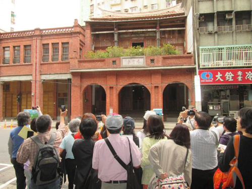
臺灣總督府醫學校講堂舞台
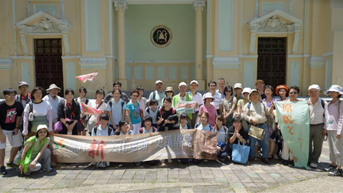
蔣渭水如夫人陳甜出家之慈雲寺
蔣渭水行跡大稻埕導覽：（徒步半日遊） （1.）臺灣新文化運動紀念館（寧夏路）→（2.）蔣渭水紀念公園（錦西街）→（3.）私立靜修高等女學校（寧夏路）→（4.）江山樓（歸綏街）→（5.）臺北更生院（涼州街）→（6.）臺北青年體育會運動場（延平北路 2 段）（7.）九間仔民眾講座（延平北路 2 段）→（8.）春風得意樓（延平北路 2 段）→（9.）→大安醫院（延平北路 2 段）→（10.）臺灣民眾黨本部舊址（天水路）→（11.）蓬萊閣（南京西路）→（12.）港町文化講座（貴德街）（13.）→永樂座（迪化街）
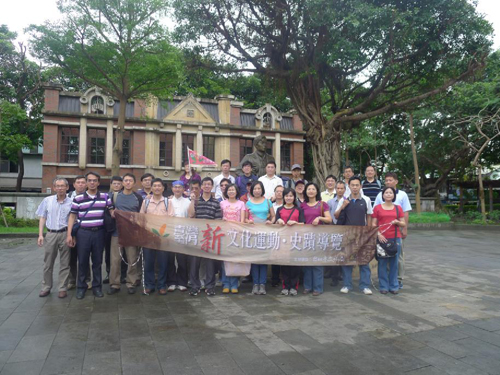
蔣渭水紀念公園
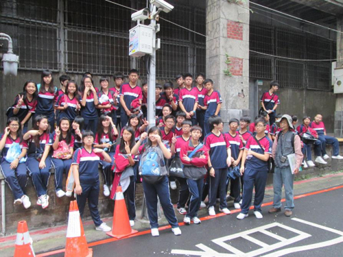
港町文化講座
蔣渭水行跡宜蘭導覽：（巴士一日遊）
（1.）蔣渭水紀念碑→（2.）宜蘭公學校→（3.）城隍廟→（4.）碧霞宮→（5.）
臺灣民眾黨宜蘭支部→（6.）文昌宮→（7.）昭應宮→（8.）渭水路郵局→（9.）
宜蘭醫院→（10.）?門故居→（11.）雪谷紀念園區（12.）櫻花陵園渭水之丘
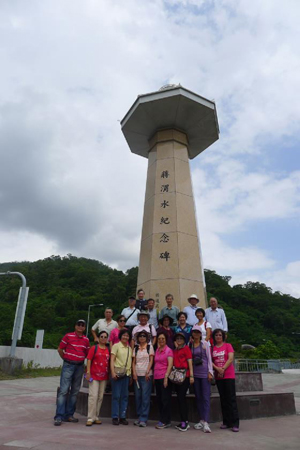
高速公路蔣渭水紀念碑
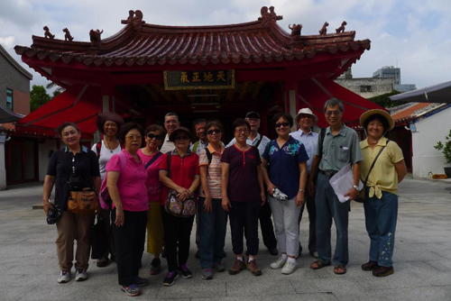
蔣渭水就讀私塾之碧霞宮
大稻埕歷史建築與人文史蹟導覽：（徒步半日遊）
蓬萊町、日新町、太平町、永樂町、港町
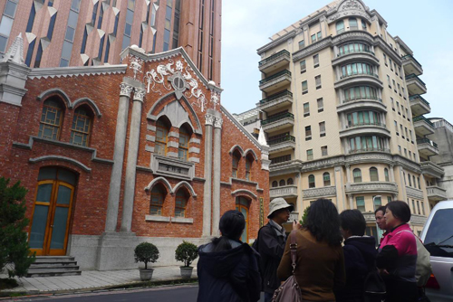
大稻埕長老教會與李春生舊居（日新町）
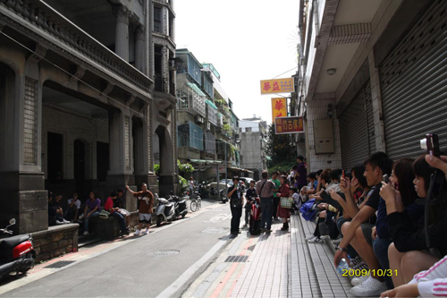
錦記茶行招待所（港町）
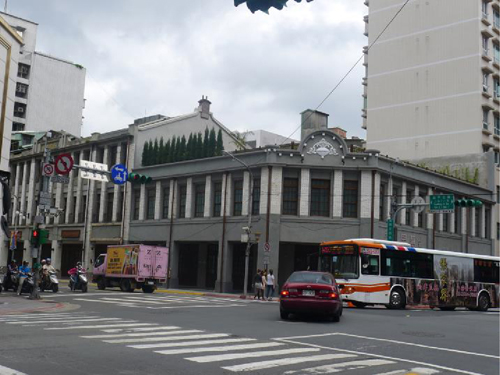
萬里紅公共食堂與亞細亞大旅社（太平町）
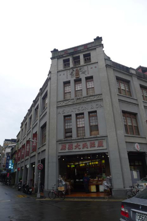
屈臣氏（永樂町）
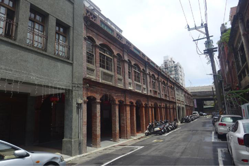
街屋（永樂町）
|